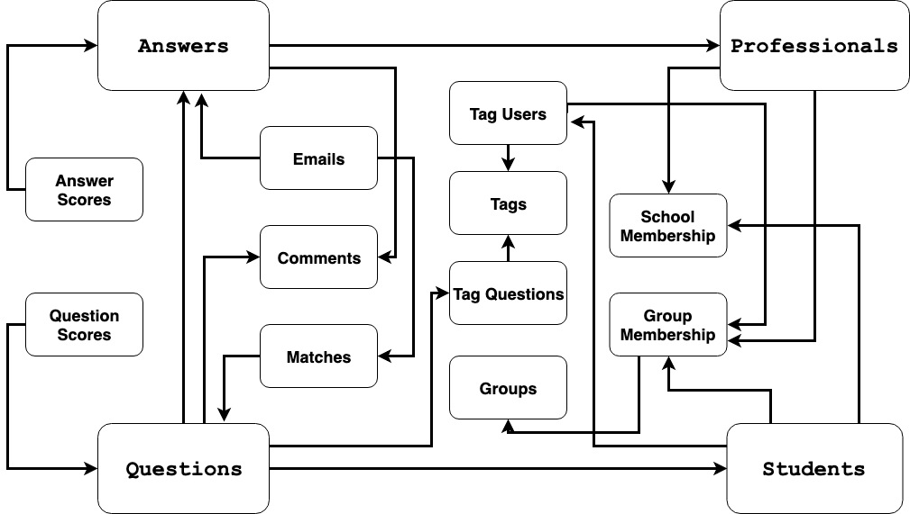

Problem Description
The U.S. has almost 500 students for every guidance counselor. Underserved youth lack the network to
find their career role models, making CareerVillage.org the only option for millions of young people
in America and around the globe with nowhere else to turn.
To date, 25,000 volunteers have created profiles and opted in to receive emails when a career question
is a good fit for them. This is where your skills come in. To help students get the advice they need,
the team at CareerVillage.org needs to be able to send the right questions to the right volunteers.
The notifications sent to volunteers seem to have the greatest impact on how many questions are answered.
objective: develop a method to recommend relevant questions to the professionals who
are most likely to answer them.
Data Overview
Below you can find the diagram with data and relations.
Essential primary entities are "Professional", "Student", "Question" and "Answer".
The most useful secondary entity is "Tag."
Primary and secondary entities are used to create so-called "content" features.
Other data is divided into two main parts "activity" and "time" features.

CSV Files
For our initial model, we will keep things simple and focus on the datasets that appear to be revelant
for our recommender system.
Information on the users. Users consist of professionals & students
professionals.csv: We call our volunteers "Professionals", but we might as
well call them Superheroes. They're the grown ups who volunteer their time to answer questions on the site.
students.csv: Students are the most important people on CareerVillage.org.
They tend to range in age from about 14 to 24. They're all over the world, and they're the reason we exist!
tag_users.csv: Users of any type can follow a hashtag. This shows you which
hashtags each user follows.
The Q&A information:
questions.csv: Questions get posted by students. Sometimes they're very advanced.
Sometimes they're just getting started. It's all fair game, as long as it's relevant to the student's
future professional success.
tag_questions.csv: Every question can be hashtagged. We track the hashtag-to-question
pairings, and put them into this file.
answers.csv: Answers are what this is all about! Answers get posted in response
to questions. Answers can only be posted by users who are registered as Professionals. However,
if someone has changed their registration type after joining, they may show up as the author of an
Answer even if they are no longer a Professional.
Information on the platform:
emails.csv: Each email corresponds to one specific email to one specific recipient.
The frequency_level refers to the type of email template which includes immediate emails sent right after a
question is asked, daily digests, and weekly digests.
matches.csv: Each row tells you which questions were included in emails. If an email contains
only one question, that email's ID will show up here only once. If an email contains 10 questions, that email's
ID would show up here 10 times.
tags.csv: Each tag gets a name.
Other tables:
group_memberships.csv: Any type of user can join any group. There are only a handful of
groups so far.
group.csv: Each group has a "type"
school_memberships.csv: Just like group_memberships, but for schools instead.
comments.csv: Comments can be made on Answers or Questions. We refer to whichever the comment
is posted to as the "parent" of that comment. Comments can be posted by any type of user. Our favorite comments
tend to have "Thank you" in them :)
question_scores.csv: "Hearts" scores for each question.
answer_scores.csv: "Hearts" scores for each answer.
**
Description of solution:
Method for taking into account all the possible content features using custom Neural Network
Architecture. Allows automatically find a probability mapping between question and professional
entities in all of the combinations (que-que, que-pro, pro-que, pro-pro). It is trained in a way that
even without any information about professional and his activity, it still recommends questions, and
breaks cold start problem having its own internal scoring.
Method *activity_filter* for filtering out all the inactive professionals in order
to send immediate emails to professionals who are most likely answer the question, and answer it fast
Methods *spam_filter* and *email_filter* for sending emails which allows to handle spam
problem and controls frequency and amount of emails for each professional based on his personal
emails reaction type and speed (here reaction==answer)
The method which tries to activate inactive and "cold" professionals by breaking *activity_filter*
and *email_filter* with some probability. This is needed for making an attempt to activate the user or
remind him about relevant questions which were already sent to him.
Suggestions and ideas for RL approach, environment modeling, and reward engineering to
handle complex metrics
Code available for deployment
Live Demo with NN based fast similarity search